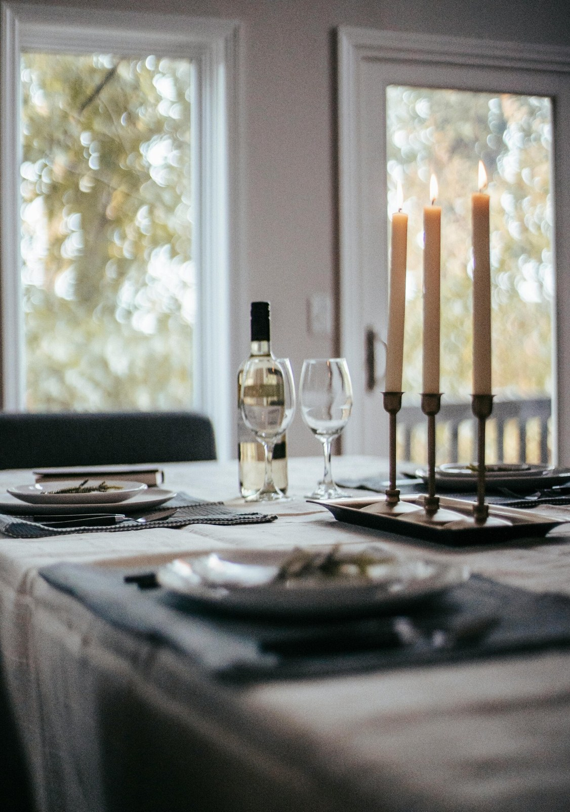
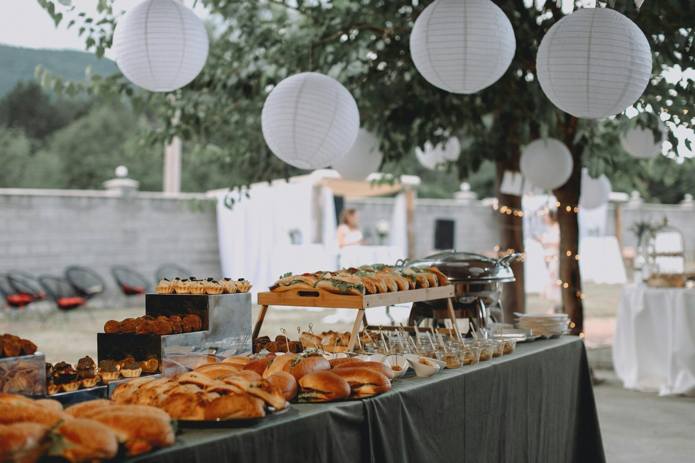
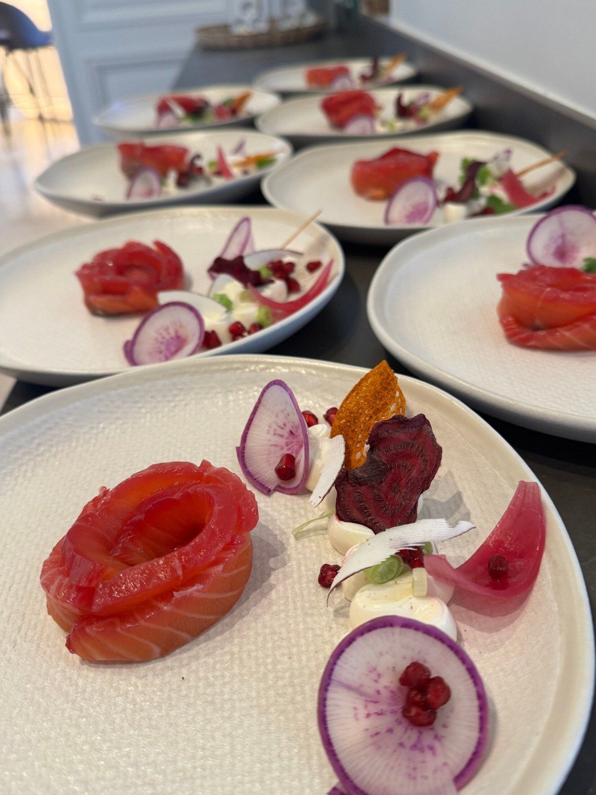

DAVID GUEZET · LA PART DU CHEF
Des prestations à votre image
Services culinaires d'exception
Découvrez nos services sur mesure, conçus pour les particuliers et les professionnels. Laissez-vous emporter par une expérience culinaire unique, où la qualité, le service impeccable et les saveurs provençales se rencontrent. Nous sommes impatients de vous offrir un moment inoubliable.
Nos prestations de service
Nous proposons une gamme de services culinaires personnalisés pour répondre à vos besoins spécifiques. Notre approche est centrée sur l'écoute et la création d'expériences mémorables, en mettant en avant les produits locaux et les saveurs de Provence.

Repas intime
Savourez un dîner romantique et exclusif, préparé avec soin et passion, directement chez vous. Profitez d'un moment privilégié sans les contraintes d'un restaurant.
Repas d'entreprise
Impressionnez vos collaborateurs avec un repas d'affaires raffiné et personnalisé. Nous nous adaptons à vos exigences et à votre budget pour un événement réussi.

Repas traiteur
Pour vos événements privés ou professionnels, bénéficiez d'un service traiteur de qualité, avec des plats savoureux et une présentation soignée. Nous nous occupons de tout, pour que vous puissiez profiter pleinement de vos invités.
Contactez-nousVotre satisfaction, notre priorité
Nous mettons tout en œuvre pour vous offrir une expérience culinaire inoubliable, en étant à l'écoute de vos besoins et en vous proposant un service sur mesure. Laissez-vous cocooner et savourez un plaisir gustatif exceptionnel.

Services professionnels
Forts de 30 ans d'expérience, nous offrons des services de consulting pour les professionnels de la restauration. Bénéficiez de notre expertise pour optimiser votre cuisine, créer des menus innovants et former votre personnel.
Notre travail
Notre approche unique repose sur l'écoute attentive de vos besoins, la réactivité et la création de services sur mesure. Nous sommes passionnés par la cuisine provençale et nous mettons un point d'honneur à utiliser des produits locaux de qualité.
Obtenir un devis